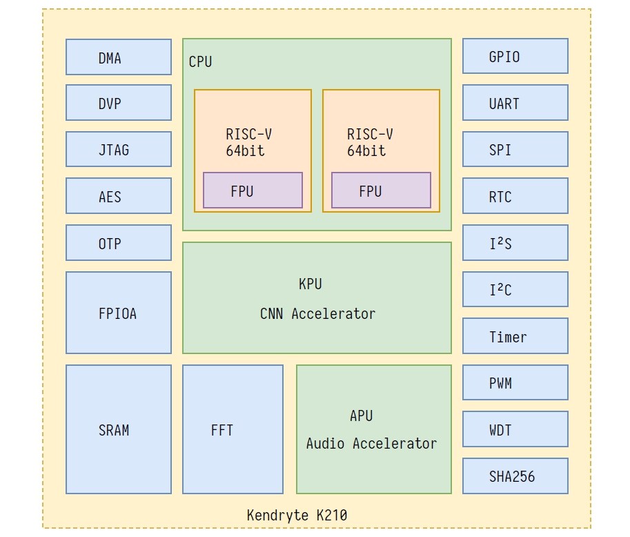

K210学习笔记(1)
K210的介绍
Kendryte K210 是集成机器视觉与机器听觉能力的系统级芯片(SoC)。使用台积电 (TSMC) 超低功耗的 28 纳米先进制程，具有双核64位处理器，拥有较好的功耗性能，稳定性与可靠性。Kendryte K210 定位于AI与IoT市场的SoC，同时是使用方便的MCU。
K210内部硬件资源介绍
- 使用RSIC-V架构64位双核带硬件FPU处理器
- 卷积人工神经网络硬件加速器KPU，可进行高性能卷积人工神经网络运算
- K210拥有高性能、低功耗总计8M大小的片内SRAM(6M大小的通用SRAM,2M大小的AI专用SRAM)
- 专用音频处理器APU
- 外设DVP、JTAG、OTP、FPIOA、GPIO、UART、SPI、RTC、I²S、I²C、WDT、Timer与PWM

K210支持的开发方式
- 使用Standalnoe SDK
- 使用FreeRTOS SDK
- 使用MaxiPython(Fork microPy)
开发环境的搭建
开发环境
IDE与插件
官方提供一个基于vscode的kendryte-ide，仅有alpha版和Beta版。同时也有直接以vscode的插件形式发布的Kendryte-dev-extension,但仅支持KD233开发板
kendryte-gnu-toolchain
这是Kendryte RISC-V的C和C++交叉编译器。它支持两种构建模式 - 通用的ELF/Newlib工具链 - Linux-ELF/glibc工具链
下载release之后直接将bin目录添加到环境变量中即可，项目地址。
SDK
对于C/C++开发者，提供两个SDK,一个裸机版本一个使用FreeRTOS的版本 - kendryte-standalone-sdk - kendryte-freertos-sdk
实际使用可以使用IDE直接创建项目，并选择依赖于哪一个SDK
使用Python进行开发
在maxipy官网下载IDE,与OpenMV同样的是基于QtCreator的IDE(界面的主题都一样。。。)。连接上开发板就能直接使用。 地址
创建第一个项目
C/C++开发
关于K210与OpenMV
OpenMV是一个图像采集处理模块。主体部分主要由一个ST的STM32H7xx系列高性能MCU和一个摄像头(OV7725,OV5640等)组成。软件方面提供基础固件，使用Python进行开发。开发工具提供了一个基于QtCreator的易用的IDE。
K210是一个AI芯片，是一个MCU。它应该与STM32H7XX系列进行对比。当然也可以自己把他完善成一个类似于OpenMV的模块如一个大佬开发的A-eye，还有SiPeed公司的Sipeed Maix boards,支持使用Python进行开发。同时Kendrtye也有使K210作为MCU并兼容OpenMV的项目kendrtye-OpenMV虽然很久没有更新了。
关于K210的特性
我个人认为K210区别与其他MCU的主要在于有KPU和APU用于处理图像和语音。K210使用KPU来进行CNN(卷积神经网络)计算。例如常用的STM32H7XX系列，虽然有JPEG编码解码器用于图像的传输，但图像处理方面仅能使用CPU进行计算，在执行较大计算量任务的时候速度会非常慢。